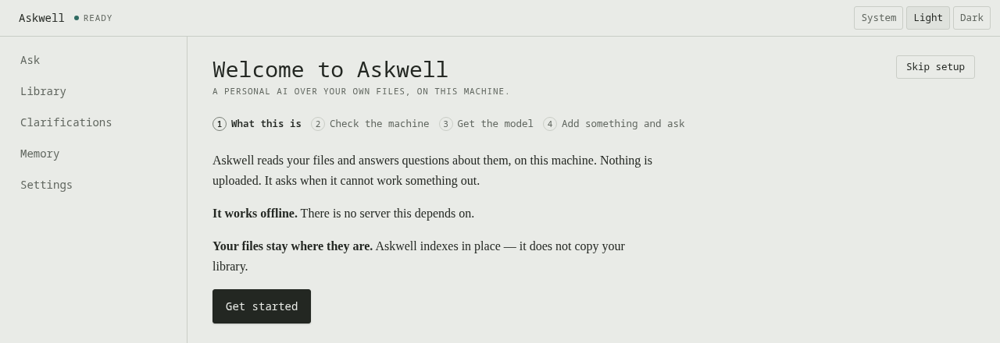
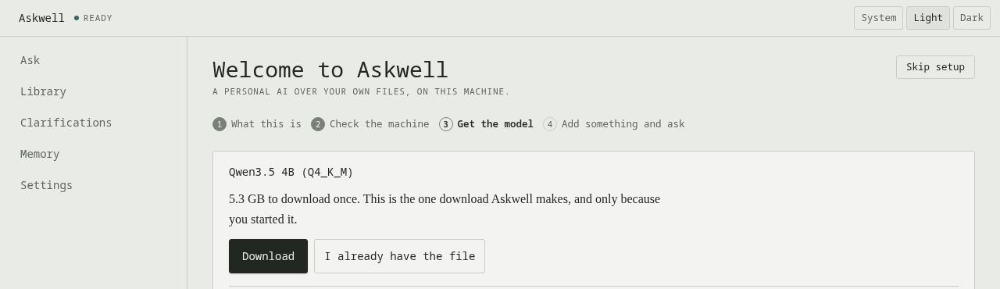
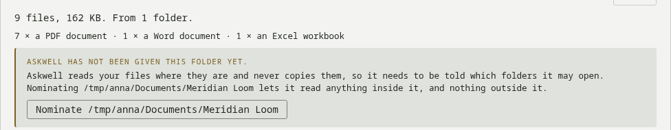
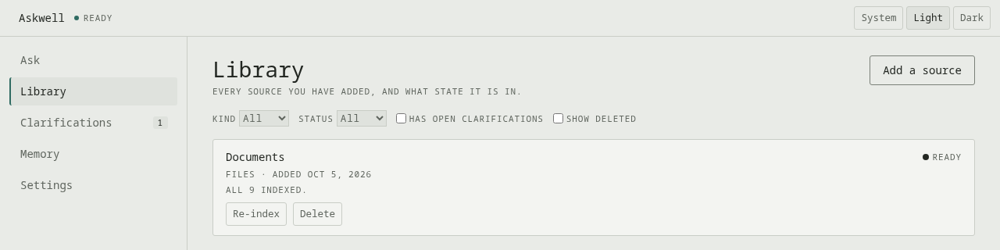
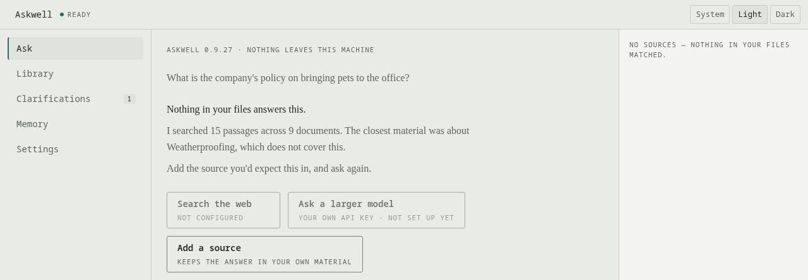
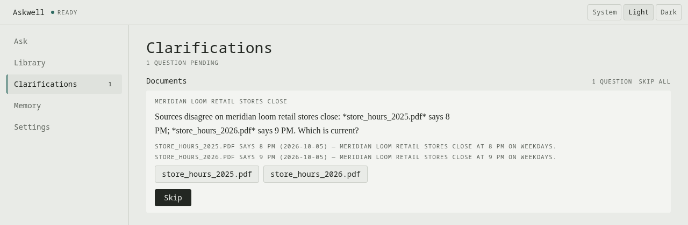
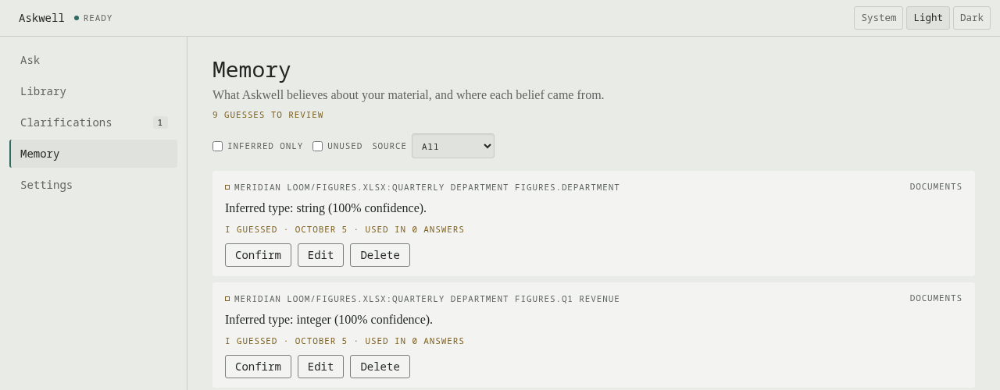

User manual. A personal AI over your own files, on your own computer.
Askwell runs on your own computer. Nothing you add to it is uploaded. You need:
Askwell is not code-signed, so Windows and macOS warn you before they run it. The warning means your computer cannot confirm who published the file. A checksum is how you confirm it is the file that was published. Check it before running anything.
SHA256SUMS.Get-FileHash Askwell-Setup-<version>.exe -Algorithm SHA256shasum -a 256 askwell-<version>-<platform>.tar.gzSHA256SUMS.If the two values do not match, stop. Do not run the file. Report it on the project's issue page: a mismatch means the file changed after it was published.
Askwell-Setup-<version>.exe.Setup changes one Windows setting, and says so in its log: it sets the Windows Subsystem for Linux to mirrored networking, which is how Askwell's services reach its AI on your PC.
If Setup stops with a message about virtualisation, your PC's firmware has virtualisation turned off. Setup names the setting. It is in the BIOS or UEFI setup, not in Windows, so you change it there, then run Setup again.
If Setup cannot finish, it saves a text file on your Desktop whose name starts with Askwell-Setup-report. Nothing is sent anywhere. See When something goes wrong.
tar -xzf askwell-<version>-linux-x86_64.tar.gz
askwell-<version>-linux-x86_64/deploy/linux/install.sh
On a distribution other than Fedora or Ubuntu, the installer stops before changing anything and tells you what to install yourself.
tar -xzf askwell-<version>-macos-arm64.tar.gz askwell-<version>-macos-arm64/deploy/macos/install.shIt installs Podman and Docker Compose with Homebrew if they are missing, and places Askwell in Applications.
You do this once. Afterwards Askwell opens normally.
The first time Askwell opens, it walks you through four short steps: What this is, Check the machine, Get the model and Add something and ask. The one that matters most is getting the model. Askwell cannot answer anything until it has one.


The download is about 5 GB on most computers, and larger on one with a capable graphics card. It includes the model that writes answers and two smaller models that read and rank your documents. A progress bar shows how much is done and roughly how long is left. This is the only download Askwell makes, and only because you started it.
When the step says Ready., the model is in place. Click Continue, then add your first folder: Add a folder of documents.
You can leave the welcome steps at any time with Skip setup. Askwell opens on Ask. If no model is in place, the status at the top of the window says so, and the welcome steps are where you download it.
The menu on the left has five places: Ask, where you ask questions; Library, everything you have added; Clarifications, questions Askwell has for you; Memory, what Askwell has learned about your material; and Settings. The status at the top left reads Ready when everything Askwell needs is running. System, Light and Dark at the top right choose the colour theme.
Askwell reads your files where they are. It does not copy, move or upload them. It builds an index of what they say, so adding a large folder costs little disk space beyond that index, and every source an answer cites opens the file you already have.
.sql, .dump and .backup). See Ask about a database.
Askwell may read folders inside your own user folder. You can see and remove the folders it may read under Settings, in Folders Askwell may read.
Indexing starts straight away and runs in the background. You can keep using Askwell. Library shows each source with its state: indexing, or Ready once every file has been read, with a line such as All 9 indexed.

A folder of a few dozen documents takes a minute or two. Hundreds of documents, or long scanned PDFs, take longer. When it finishes, Askwell may have a question or two about what it read; see Answer Askwell's questions.
A web browser does not tell Askwell where a file is on your computer, only its name. So after you choose a folder, Askwell asks Which folder is “…” in?. Type the full path of the folder that contains the one you chose, then click Add them. For a folder at /home/anna/Documents/Meridian Loom, type /home/anna/Documents.
The Askwell window does not ask this. It gets the path from the folder dialog.
Ask in plain English, the way you would ask a colleague who has read everything you added. Askwell answers only from your own material, and shows you where each part of the answer came from.
Askwell shows what it is doing (Searching your files., Reading 9 sources.) and then writes the answer as it goes. Stop ends an answer early.
The sources an answer used are listed as cards on the right. Each card names the document and pages, and quotes the passage. Point at a statement in the answer to highlight the card it came from, or at a card to highlight its statements. Click See full passage to read it in context and open the document.
Only trust a statement you can trace to a source. If a statement has no source card, Askwell could not support it, and you should treat it as unconfirmed.
How did you get this? under an answer shows the steps Askwell took: what it searched for, which passages it found and how well they matched.
Askwell answers the part it can, and lists the rest under Not covered by your files.
If two of your documents say different things about what you asked, Askwell shows both, each with its source, rather than choosing one. It may also ask you which is current; see Answer Askwell's questions.
Askwell says Nothing in your files answers this. rather than guessing, and names the closest material it found. It does not fall back on general knowledge.

Three ways on are offered below it:
Try rephrasing too. A question using the words your documents use is more likely to find them.
Ask a follow-up in the same box. Askwell keeps the conversation, so "and for part-time staff?" is understood in the light of what you asked before.
To ask about something unrelated, click New conversation at the top of the Ask screen. The screen clears and your next question starts afresh, on your computer. If an answer is still being written, Askwell finishes it and keeps it in History.
Click Show older conversations at the bottom of the list to see further back.
A conversation reopened from History always continues on your computer, even if you had switched it to a larger online model before. Switch it again if you want that.
If a document an old answer cited has since been removed, its source card stays and says so, instead of quoting the passage.
While it reads your files, Askwell notices things it cannot work out on its own. Two documents give different figures for the same thing. Two files look like versions of the same document. An abbreviation is used everywhere and never explained. Instead of guessing, it asks you. It remembers your answer and uses it in every later answer.
You never have to answer. Skipping is always possible, and Askwell then works with a stated assumption.
When Askwell has questions, the number appears next to Clarifications in the menu, and a prompt with Review and Dismiss may appear at the top of the window.

After you answer, Askwell confirms it and offers Undo. If the answer changes how your documents should be read, Askwell re-reads the ones affected and shows its progress.
If a question you ask depends on something Askwell is unsure about, it asks you first, in the conversation, before it answers. The question shows the same evidence and choices. Choose an answer and Askwell carries on with it. Or click Skip: Askwell answers anyway and says which assumption it made, for example the most recently added document, and that you can answer the question later in Clarifications.
Askwell interrupts like this only when the answer really depends on it. Anything else waits in Clarifications.
Every answer you give becomes something Askwell remembers. You can see, change or delete it in Memory; see Review what Askwell remembers.
Memory holds everything Askwell believes about your material that is not written in the documents themselves: your answers to its questions, and guesses it made on its own, such as what kind of data a spreadsheet column holds. Each entry says where it came from and how many answers have used it.

The filters at the top narrow the list: Inferred only shows just the guesses, Unused shows entries no answer has used yet, and Source limits the list to one source.
Delete all memory, at the bottom of the screen, removes everything Askwell has learned, after you confirm with Delete all. Your documents and the index are not touched.
Deleting all memory cannot be undone. Every answer you gave to Askwell's questions is lost with it.
Library lists every source you have added (a folder, a database dump or a database connection) and what state it is in.
The filters at the top show one Kind or Status at a time, only sources with Has open clarifications, or sources you deleted, with Show deleted.
Askwell checks regularly that every file it has read is still where it was, and lists any that have moved or gone under the source. It does not pick up files you put in a folder later. Add the folder again: files Askwell already has are skipped, and only the new ones are read.
To read everything in a source again from scratch, click Re-index and confirm. On a large source this can take a long time, and answers about it may be thin until it finishes.
Deleting a source makes Askwell forget its contents and stop using it in answers. Your files on disk are not touched. Past answers that cited it show it as deleted.
Askwell can answer questions straight from database tables (counts, totals, lists of records) as well as from documents. It writes the query itself, shows it to you with the result, and only ever reads: it never changes your data. There are two ways to give it a database.
A dump is a file exported from a database. Askwell imports PostgreSQL dumps: .sql, .dump and .backup files. MySQL and SQL Server dumps are not imported; connect to those databases instead, or export their tables as Excel files.
A dump can contain commands, not just data. That is why Askwell runs it in a sealed copy. If the dump is broken or malicious, only that copy is affected.
Askwell connects to PostgreSQL, MySQL, MariaDB and SQL Server. It needs a user that can only read. If the user you give it can change anything, Askwell refuses the connection, names the permission it found, and shows the statements to create a read-only user, ready to copy.
The password is stored encrypted on your computer.
Ask as you would about documents: "How many orders were placed in March?" Askwell decides whether your question is about documents or tables. For a table, it shows the result as a table, with the query it ran. Only a single read-only query is ever run. Anything else Askwell writes is refused before it reaches your database.
Settings is one long page. Every change you make there is recorded.
How close a passage must be to your question before Askwell will answer from it. Lower it and Askwell answers more often, from weaker matches, and more of those answers are wrong. Raise it and Askwell says "nothing in your files answers this" more often, but what it does answer is more likely to be right. Leave it as it is unless you have a reason.
Online AI would let a single conversation use a larger model at a provider you choose, with your own key. There is no switch here that turns it on everywhere. You can store a key under Your key: it is kept encrypted on this computer and never shown again. Online AI sends nothing today. The page says so under What leaves this machine.
The folders you have allowed Askwell to read, each marked Readable or with the reason it is not. Remove takes one off the list. To allow another folder, type its full path under Nominate a folder and click Nominate. Askwell can read your own user folder, read-only, and nothing outside it.
There is no way to recover a forgotten passphrase. Losing it means losing access to the library. Askwell asks you to confirm that you understand before it sets one.
Askwell says what state it is in at the top of the window. When something is not working, a banner names it and, wherever possible, says what still works.
The window is open but Askwell's services behind it are not answering. Click Open Supervision… in the banner. The Supervision window shows Askwell's services and its AI, each with Start, Stop and Restart, and Restart both for everything at once. Try Restart both. If that does not help, restart the computer.
If the banner says the assistant is unavailable, Askwell cannot write answers, but searching and reading your files keep working, and the banner lists what still works. The usual causes:
Askwell would rather say it found nothing than guess, so an occasional "nothing in your files" for something that is there is the safer mistake.
Some of its files could not be read. Open the source in Library to see which files and why. A file that has moved can be added again from its new place.
Setup leaves a text file on your Desktop whose name starts with Askwell-Setup-report. It says what Setup found on your PC and which step failed. Your user name and computer name are removed from it, and it is not sent anywhere. To get help, attach it to a report on the project's issue page.
Report problems on the project's issue page. Say what you did, what you expected and what happened. A screenshot helps. The Supervision window's Logs, for a bug report section shows where Askwell's logs are, with Copy path. Look through them before you share them: they can contain the names of your files.